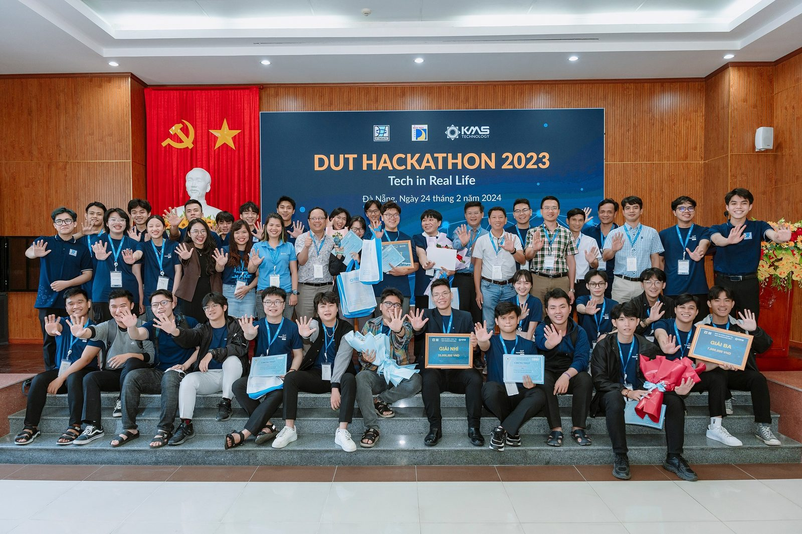

Case studies
Each case study follows the same frame — Context → Problem → My role → Process → Artifacts → Outcome → Learnings — so you can see how I move from a business need to a delivered, accepted release.

Rofarez — IoT security products, from prototype pitch to delivery
Owning product research, prototypes pitched with the CEO, and team & timeline management for IoT security solutions — location tracking, movement monitoring, 3D modelling — for clients across VN, MY, SG and US.

Gametamin — Lifecycle management for games with 500K–1M downloads
Running the lifecycle of live games: product direction with the CEO and marketing, market analysis, and Agile delivery across 10+ sprints.

Pacific Link Foundation — STEM programs with Intel & industry partners
Managing STEM programs, resources, schedules and partners; 100+ students trained, 1,000+ learners reached.

FPT Software — E-recording platform for the US market
Business analysis for a US e-recording / e-notarisation platform: pain points, an AI-OCR prototype for document data extraction, BOD presentation and UAT.

Outline — high-concurrency multiplayer game engine (capstone, Top 4)
Leading an Agile team of 5 to implement and optimise a real-time game simulation engine on Photon Fusion 2 — ranked Top 4 capstone project.

Electratech — IoT smart power outlet with AI energy optimisation
Hackathon product: defined market needs and product behaviour, prototyped and integrated an AI-driven smart outlet.
Beyond delivery
Vice President — Danang Social Activities Club
09/2022 – 07/2023 · 20 members
- Led community initiatives, securing over 100 million VND in support.
- Organised events promoting social engagement; mobilised volunteers and coordinated logistics.
Pacific Link Foundation — scholar, mentor & program lead
2018 – 2025
- Active member and mentor in scholarship programs supporting IT education and leadership development.
- Summer camps, GRIT IT-orientation program and virtual workshops for students in Da Nang.